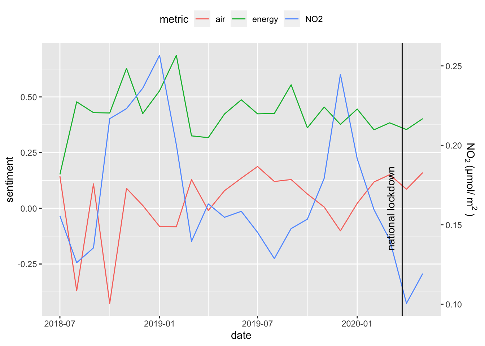

Lesson 3 Integration
3.1 Time series plot of satellite & sentiment metrics
Let’s now integrate data from satellite and sentiment into the same monthly time series plot, first rescaling all metrics -1 to 1 for comparison.
library(here)
library(glue)
library(readr)
library(dplyr)
library(lubridate)
library(scales)
library(ggplot2)
library(plotly)
# paths
loc_name <- "delhi"
satellite_csv <- here(glue("data/no2_{loc_name}_ee-chart.csv"))
sentiments_csv <- here(glue("data/sentiments_{loc_name}.csv"))
metrics_csv <- here(glue("data/metrics_{loc_name}.csv"))
lockdown <- list(
date = as.Date("2020-03-24"),
text = "national lockdown")
if (!file.exists(metrics_csv)){
sentiments <- read_csv(sentiments_csv) %>%
rename(date = ym_date) %>%
mutate(
metric = glue("{query_name}"),
sentiment = tf_score) %>%
select(metric, date, sentiment)
satellite <- read_csv(satellite_csv) %>%
transmute(
date = mdy(`system:time_start`) %>%
floor_date(date, unit = "month"),
no2 = NO2_column_number_density) %>%
group_by(date) %>%
summarize(
no2 = mean(no2, na.rm=T)) %>%
mutate(
metric = "NO2",
sentiment = rescale(no2, to = range(sentiments$sentiment))) %>%
select(metric, date, no2, sentiment)
bind_rows(
satellite,
sentiments) %>%
write_csv(metrics_csv)
}
metrics <- read_csv(metrics_csv)
no2 <- metrics %>%
filter(metric == "NO2") %>%
pull(no2)
g <- metrics %>%
ggplot(
aes(x = date, y = sentiment, color = metric)) +
geom_line() +
scale_y_continuous(
sec = sec_axis(
~rescale(., range(no2)),
name = bquote(NO[2]~"(µmol/"~m^2~")"))) +
theme(legend.position="top")
g_lockdown <- g +
geom_vline(xintercept = lockdown$date) +
annotate(
"text", label = lockdown$text,
x = lockdown$date, y = 0, angle = 90, vjust = -1)
g_lockdown
Interesting! The air quality sentiment (red line) does seem to be inversely correlated with nitrogen dioxide (NO2; blue line). The sentiment for clean energy (green line) seems to correlate with satellite NO2 until 2019-03 then remains relatively steady.
3.2 Box plot of satellite & sentiment metrics before/after lockdown
Let’s compare averages before and after lockdown March 24, 2020.
date_lockdown <- as.Date("2020-03-24")
metrics_ba <- bind_rows(
metrics %>%
filter(date <= date_lockdown) %>%
mutate(
period = "before"),
metrics %>%
filter(date > date_lockdown) %>%
mutate(
period = "after")) %>%
mutate(
period = factor(period, c("before", "after"), ordered = T))
g <- metrics_ba %>%
ggplot() +
geom_boxplot(aes(x = metric, y = sentiment, fill = metric)) +
facet_wrap(~period)
ggplotly(g)The sentiments do not look significantly different before and after lockdown, especially relative to the dramatically different NO2 (blue).